السلسلة 26
السيارة (صنف B) · 40 سؤال بالصوت. حاول تجاوب بوحدك، من بعد شوف الجواب.
السؤال 1
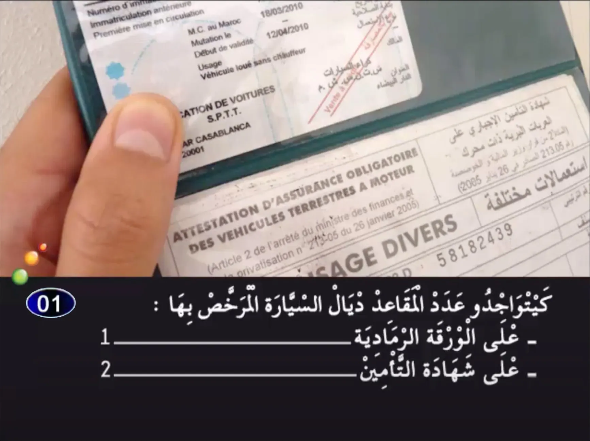
بيّن الجواب
الجواب الصحيح: 2
عدد مقاعد السيّارة المرخّص لها يتواجد على شهادة التأمين. (شركة التأمين هي التي ترخص عدد المقاعد، لذلك سوف نجد عدد مقاعد السيّارة المرخصة لها يتواجد على شهادة التأمين).
السؤال 2
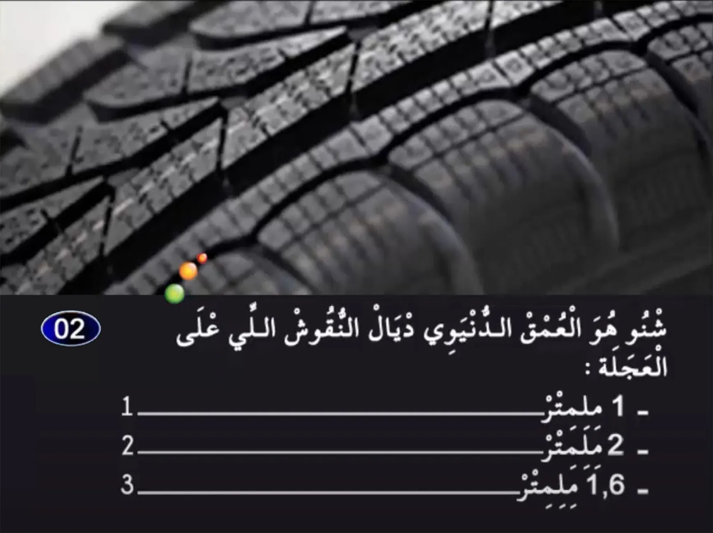
بيّن الجواب
الجواب الصحيح: 3
العمق الدُّنيوي للنّقوش التي تتواجد في العجلة هو 1,6 مليمتر. (النقوش هو ذلك الفراغ الذي في العجلة كما في الصورة) وهذه النّقوش فهي توضح هل العجلة مازالت صالحة للاستخدام أم لا وذلك عن طريق عمق النّقوش، فلو كان عمق النُّقوش أقل من 1,6 مليمتر (مثلا 1,4 مليمتر) فهذا يدّل على أن العجلة لم تعد صالحة للاستعمال.
السؤال 3
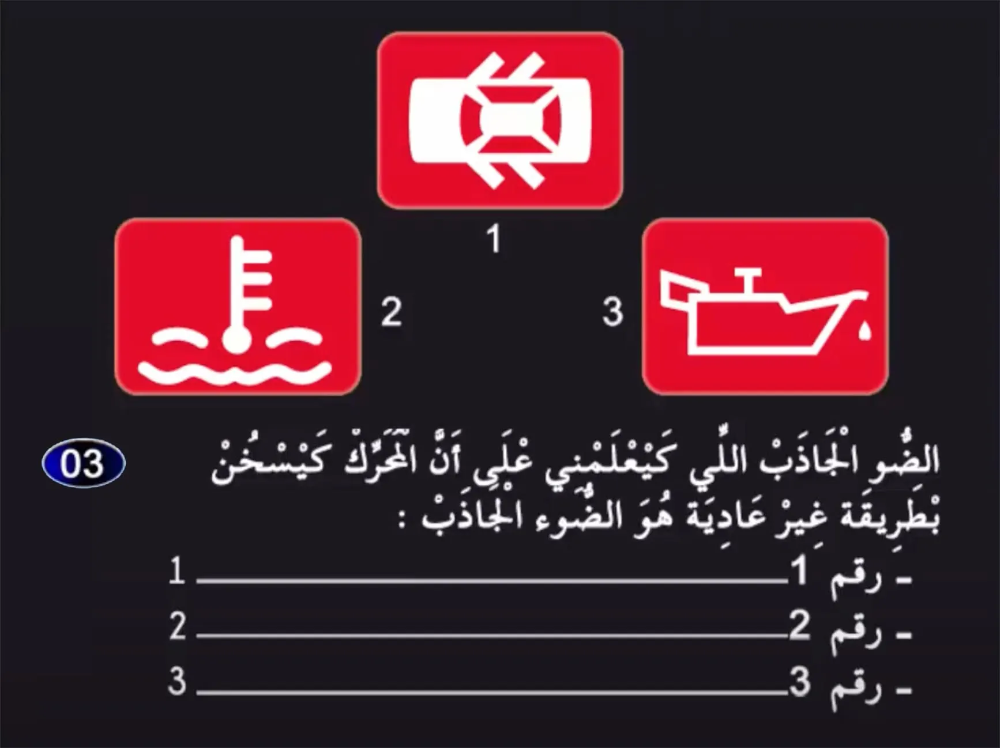
بيّن الجواب
الجواب الصحيح: 2
تذكير: الأضواء الجاذبة عندما يكون لونها أحمر فهذا يشير إلى وجود خطر في السيّارة. بالنسبة إلى هذه الحالة فإن الضوء الجاذب الذي يُعلم على أن المحرّك ساخن بطريقة غير عادية فهو الضوء الجاذب رقم 2. (الضوء الجاذب رقم 1 يشير على أن أحد أبواب السيارة مفتوحة، بالنسبة للضوء الجاذب رقم 3 فهو يشير على أنه يوجد نقص في زيت المحرّك).
السؤال 4
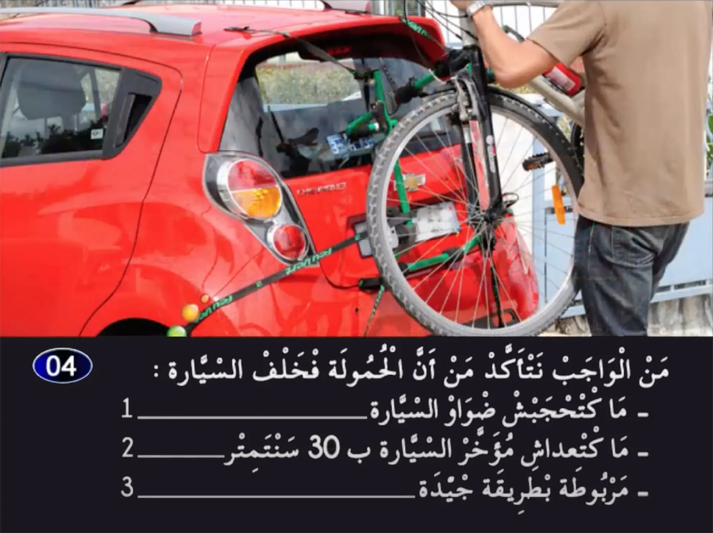
بيّن الجواب
الجواب الصحيح: 1 و 3
عند وضع حمولة خلف السيّارة فيجب عليّ التأكد من أنها مربوطة بشكل جيّد لكي لا تُشكل خطر على مستعملي الطّريق، وأيضا أن تكون الحمولة لا تَحْجُب أضواء السيّارة لأنه لو تم حجب أضواء السيّارة فهذا سوف يشكل خطر، فمثلا لن ينتبه السائقين الاخرين على أنني قُمت بالضغط على الفرامل أو أنني أريد الانعطاف. (بالنسبة لتجاوز الحمولة من الخلف، فلا يجب أن تتجاوز الحمولة 3 أمتار وليس 30 سنتيمتر).
السؤال 5
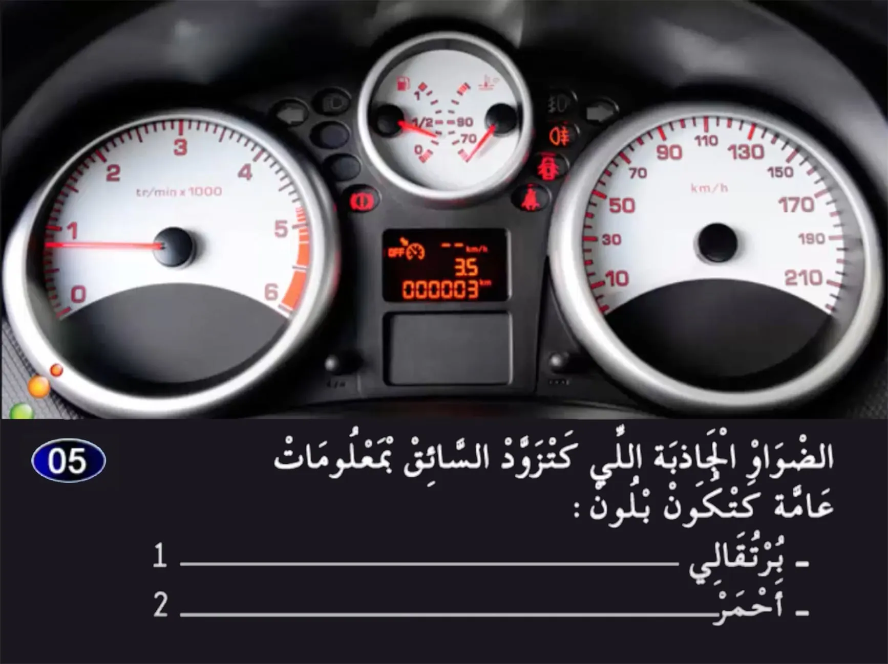
بيّن الجواب
الجواب الصحيح: 1
الأضواء الجاذبة التي تُزَوِّدْ سائق السيّارة بمعلومات عامة (تكميلية) حول سيارته فتكون باللون البرتقالي، بالنسبة للون الأحمر فهو خاص بالخطر الذي يكون في السيّارة وليس بالمعلومات التّكميلية.
السؤال 6
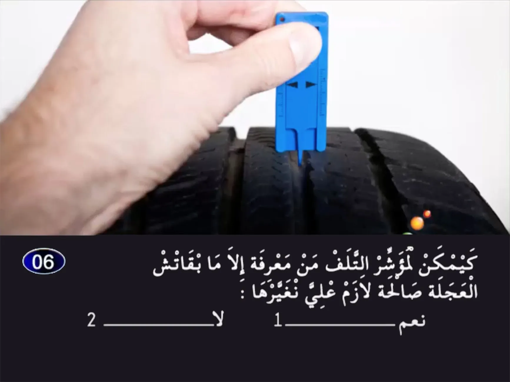
بيّن الجواب
الجواب الصحيح: 1
المقياس الذي يظهر في الصورة وباللون الأزرق فهو يسمى مؤشّر التّلف ونستخدمه في قياس عُمق النَّقش العجلة، وبالتالي يمكِّنُنا من معرفة هل العجلة مازالت صالحة للاستعمال أم لا من خلال قياسه لعُّمق النَّقش في العجلة. (العمق الدنيوي الذي يجب أن يتوفّر عليه نَقْش العجلة لكي نقول على أن العجلة مازالت صالحة فهو 1,6 مليمتر، لو وجدنا أقل من هذا العمق إذن العجلة غير صالحة للاستعمال ويجب تغييرها).
السؤال 7
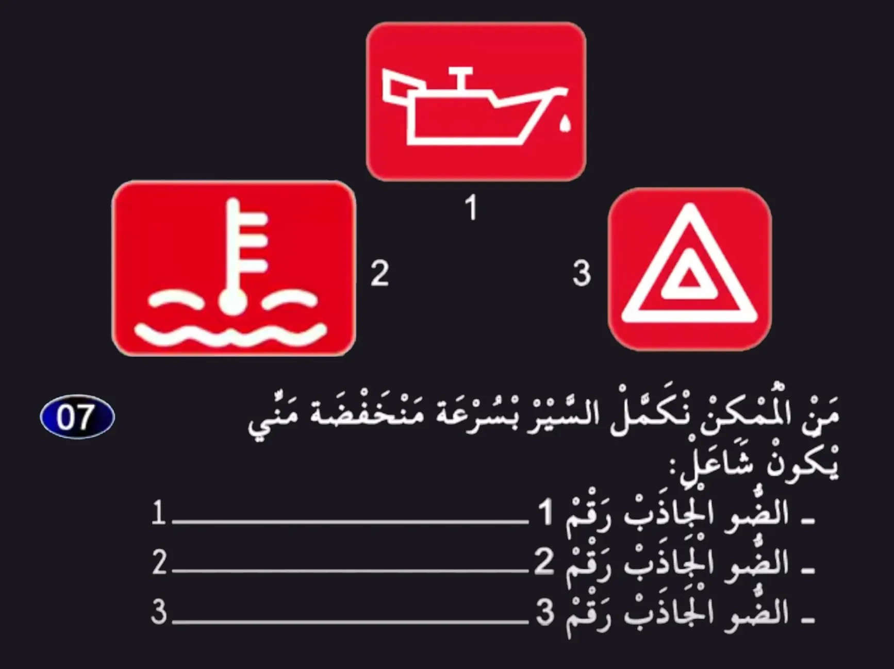
بيّن الجواب
الجواب الصحيح: 3
الضوء الجاذب رقم 1 فهو يشير على أن هنالك نقص كبير في زيت المحرّك ولا أستطيع إكمال السير بسرعة منخفضة لو إشتغل لأنه يجب عليّ التوقّف وإضافة زيت المحرّك (لو أكملت السير به فسوف أتسبب في ضياع المحرّك). الضوء الجاذب رقم 2 فهو يشير على أن المُحرّك ساخن ودرجة حرارته غير عادية ويجب عليّ التوقّف في الحال وتفقّده بعدما يبرد. بالنسبة للضوء الجاذب رقم 3 فهو خاص بالنّجدة (أي استعمال أضواء السيّارة ب 4) يُّمكنني استعماله عند تواجدي قرب حادثة أو عندما تكون حركة السّير بطيئة، أي أنه لا يشير لوجود خطر في السّيارة بل فقط لتنبيه السائقين الاخرين بشيئ ما.
السؤال 8
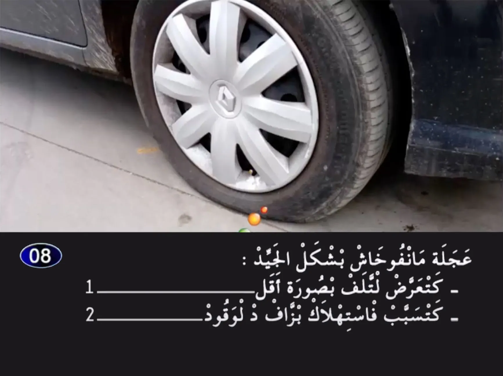
بيّن الجواب
الجواب الصحيح: 2
عندما تكون عجلة غير منفوخة بشكل جيّد فهي تتسبب في إستهلاك أكثر ومُفرط للوقود. (كما أنها تتعرّض للتّلف بصورة أكبر وليس أقّل).
السؤال 9
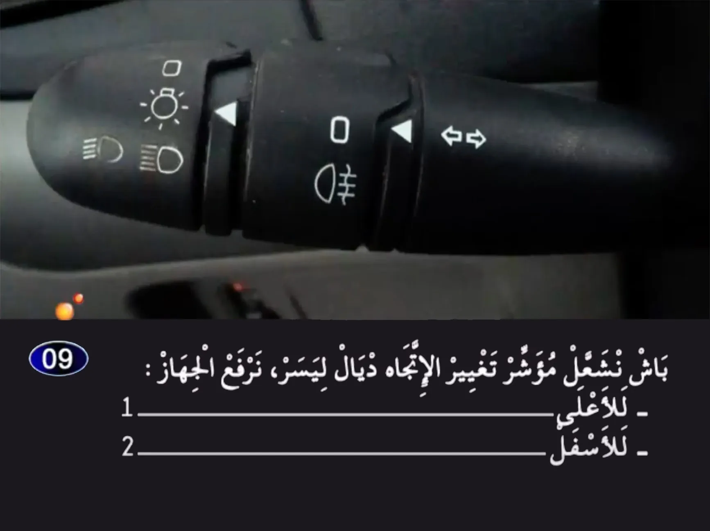
بيّن الجواب
الجواب الصحيح: 2
هذا الجهاز يُمكِّنُني من تشغيل أضواء السيّارة، لو أردت تشغيل مؤشّر تغيير الاتّجاه لليسار فإننا نقوم بإنزال الجهاز للأسفل (رفعه للأعلى سوف نقوم بتشغيله لليمين).
السؤال 10
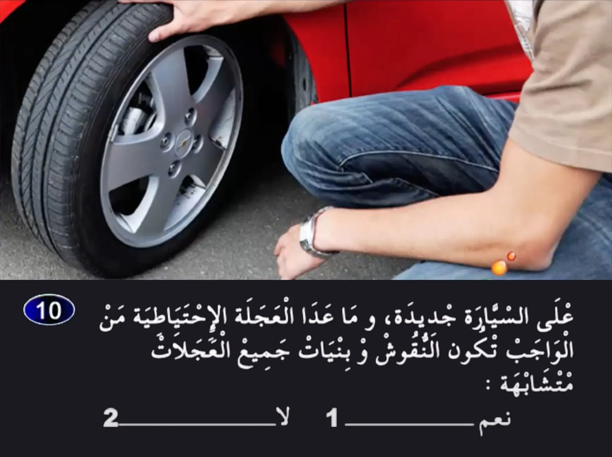
بيّن الجواب
الجواب الصحيح: 1
يمكن أن تكون نقوش العجلات مختلفة وذلك بسبب طبيعة الحركة على الطّريق وهذا لا يُشكِّل مشكل في حدود أن لا يكون عّمق النُّقوش أقل من 1,6 مليمتر. بالنسبة لبنيات العجلات (حجم العجلة أو قِياسُها) فهنا يجب عليها أن تكون متشابهة ولا يمكن أن تكون مختلفة، يجب أن يكون قياسها متشابه مثلا لو كان حجم العجلة في الأمام هو 19 فيجب ايظا أن تكون العجلات الأخرى لديها نفس المقاس 19 وليس مقاس مختلف. إذن الإجابة الصّحيحة هي 1.
السؤال 11
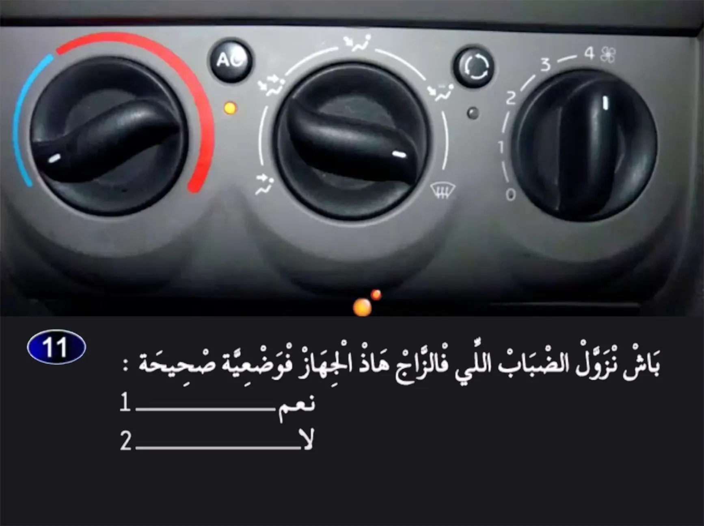
بيّن الجواب
الجواب الصحيح: 1
الجهاز المتواجد في الصورة فهو خاص بالضباب، وعلى الرّغم من وجود 3 أجهزة فإنهم مُرتبطين مع بعضهم البعض، الجهاز المتواجد على اليسار فهو نظام التَّهْوية (الأزرق هواء بارد والأحمر هواء دافئ)، الجهاز المتواجد في الوسط فهو يُوضّح مكان خروج الهواء الخاص بنظام التَّهْوية، والجهاز على اليمين فهو يُوضّح سرعة دوران نظام التَّهْوية. في الصورة الجهاز المتواجد في الوسط فهو مَوْضُوعْ في الزجاج الأمامي، وهذا يعني إزالة الضباب الذي في الزجاج الأمامي للسيّارة. إذن الجهاز في وضعية صحيحة.
السؤال 12
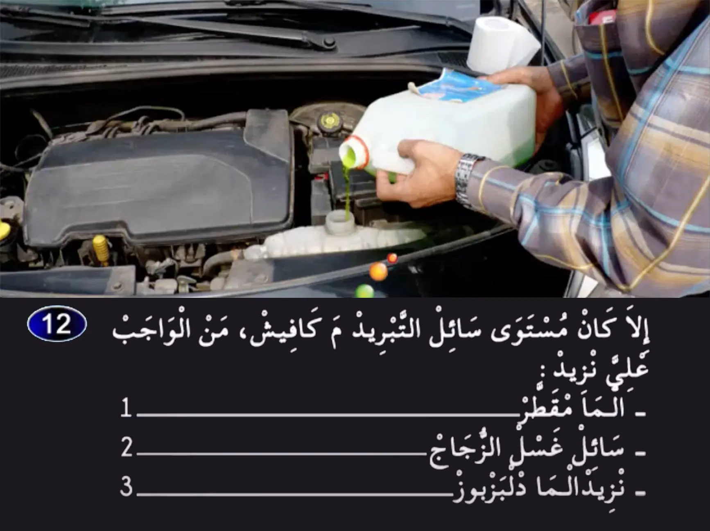
بيّن الجواب
الجواب الصحيح: 1
إذا كان مستوى سائل التّبريد غير كافي فمن الواجب عليّ زيادة الماء المُقَطَّرْ. (إضافة الماء العادي أو ما يُسمى بماء البَزْبوزْ فسوف يؤدي بعد مدّة من استعماله إلى تَرسُّبْ الكارْكيرْ في علبة السائل وثُقبها من الأسفل. لا يمكن استعمال سائل غسل الزجاج في علبة سائل التّبريد).
السؤال 13
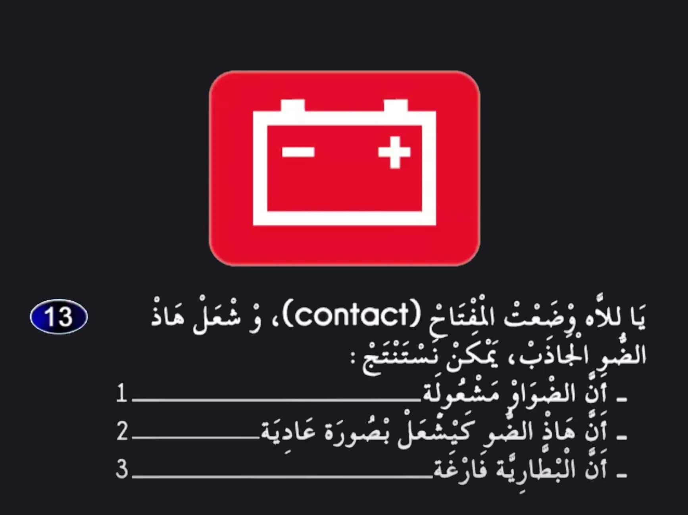
بيّن الجواب
الجواب الصحيح: 2
الضوء الجاذب الذي يظهر في الصورة فهو خاص ببطارية السيّارة، لو اِشغل عند وضع مفتاح السيّارة عند الإقلاع فهذا يعني على أن الضوء الجاذب يشتغل بصورة عادية (ليس وحده من يشتغل عن وضع مفتاح الإقلاع فيوجد أضواء أخرى تشتغل أول ما أضع مفتاح الإقلاع وهذا شيئ طبيعي لأنه يشير إلى التّيار الكهربائي يشتغل عند وضع المفتاح أول مرّة لذلك هذه الأضواء الجاذبة تشتغل).
السؤال 14
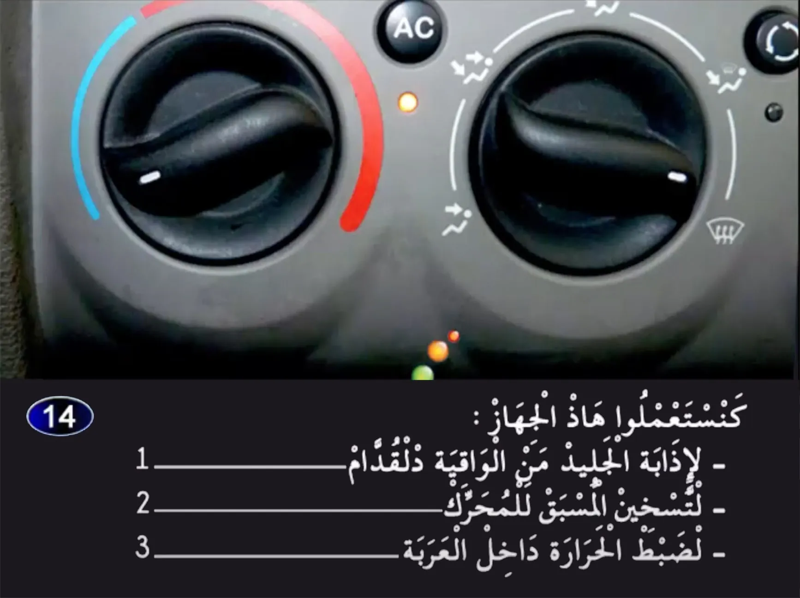
بيّن الجواب
الجواب الصحيح: 1 و 3
الجهاز المتواجد على اليسار فهو نظام التَّهْوية (الأزرق هواء بارد والأحمر هواء دافئ)، والجهاز المتواجد على اليمين فهو يُوضّح مكان خروج الهواء الخاص بنظام التَّهْوية. إذن أستعمل هذا الجهاز لإذابة الجليد أو الضباب من الزجاج الأمامي في السيّارة كما يوضّح المؤشّر الجهاز على اليمين، وأيضا يُمكِّنُني الجهاز من ضبط الحرارة داخل السيّارة (هواء دافئ أو بارد داخل السيّارة). (لا يُمكِّنُني الجهاز من التّسخين المسبق للمُحّرك).
السؤال 15
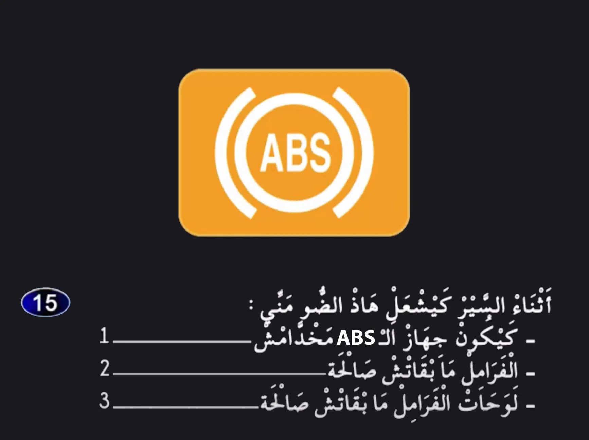
بيّن الجواب
الجواب الصحيح: 1
الأضواء الجاذبية البرتقالية فهي تعطينا معلومات تكميلية عن السيّارة ولا تُعلمني على خطر. الضوء الجاذب المُبيّن في الصورة مكتوب فيه ABS، وهو يُعلمني على أن ABS غير شغال وفيه عطب. (إذا لم يشتغل فلا يُشكل عليّ أي خطر لأنه نظام إضافي يساعد في حصر السيّارة).
السؤال 16
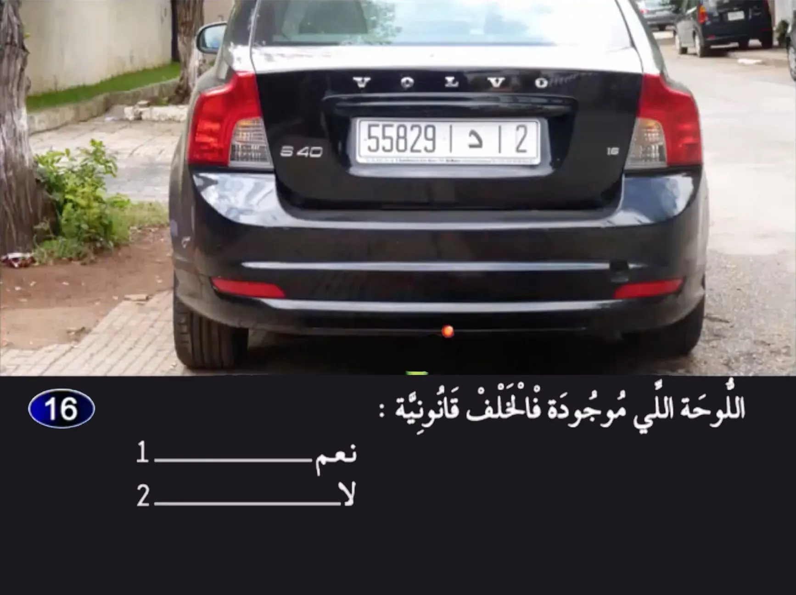
بيّن الجواب
الجواب الصحيح: 1
لوحة ترقيم السيارة بالمغرب في السّابق كان كُلّها تتكون من أرقام، لكن مُؤخَرا تمت إضافة حروف إلى لوحة ترقيم السيارة (مثلا: أ، ب، د، ه) بالنسبة للرّقم الذي يظهر على يمين لوحة التّرقيم فهو يّشير إلى المدينة والرقم الذي يوجد على يسار لوحة التّرقيم فهو ترقيم السيّارة. في هذه الحالة وفي الصورة التي تظهر فإن لوحة ترقيم السيّارة الخلفية فهي قانونية.
السؤال 17
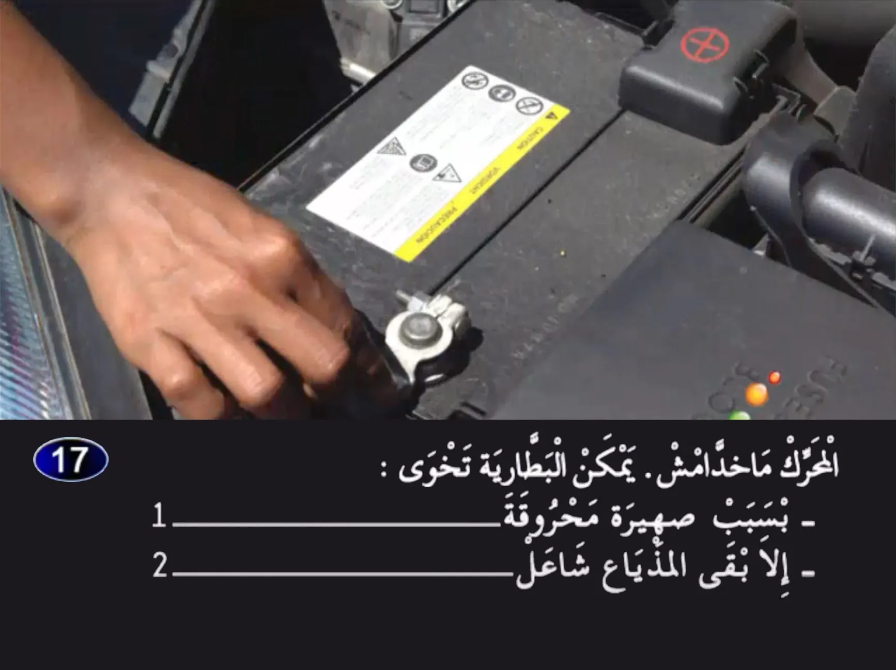
بيّن الجواب
الجواب الصحيح: 2
إذا كان المّحرك مُتوقّف (أي السيارة مُتوقِّفًة) فَيُمكن أن تَنْفَذ بطّارية السيّارة لو بقي مذياع السيّارة شغّال والسيّارة متوقّفة. لذلك لا يُنصح بإستعمال المذياع لفترة طويلة والسيّارة متوقّفة لأن المذياع سوف يستنزف بطّارية السّيارة أي بمعنى اخر سوف يستهلك طاقة البطّارية، ولن تكون السيّارة قادرة على الإقلاع.
السؤال 18
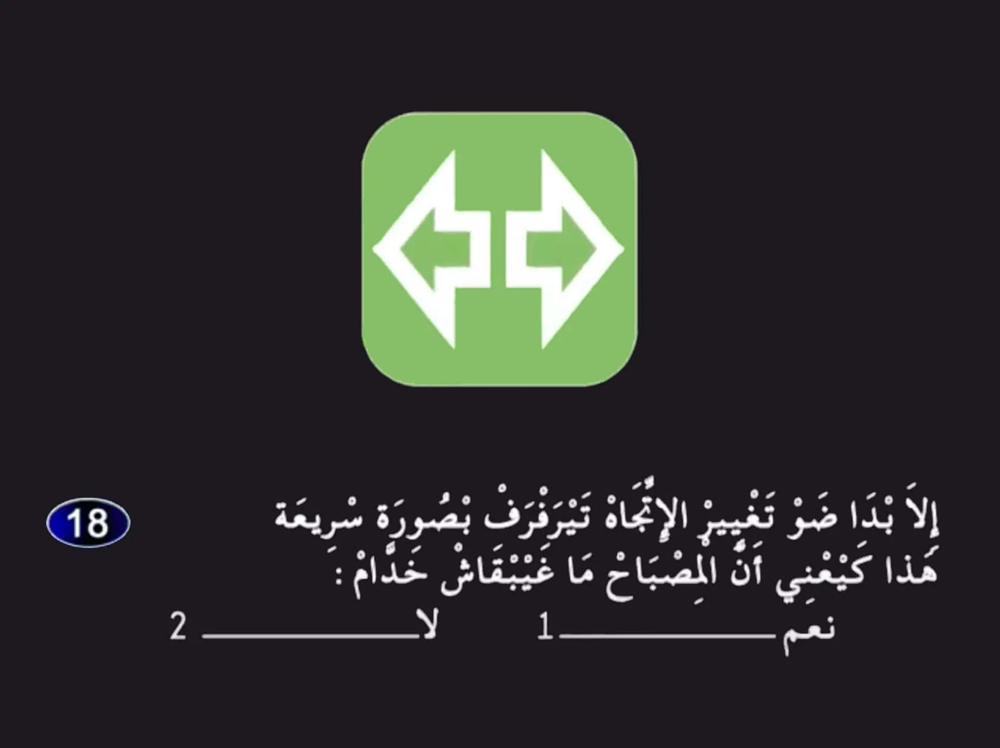
بيّن الجواب
الجواب الصحيح: 1
الضوء الجاذب الظاهر في الصورة فهو خاص بتغيير الاتجاه (عندما نريد الانعطاف لليمين أو اليسار نقوم بتشغيله)، عندما أقوم بتشغيله فسوف يظهر في لوحة القيادة لكي يعلمني على أنه شغال ويبقى يُرَفْرِف بصورة عادية وليس سريعة. عندما يبدأ يُرَفْرِف بصورة سريعة فهذا يَدُلْ على أن المصباح سوف يَتْلَف ولن يبقى يشتغل.
السؤال 19
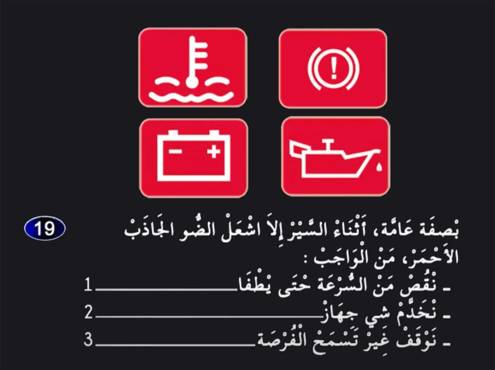
بيّن الجواب
الجواب الصحيح: 3
بصفة عامّة عند اشتعال الأضواء الجاذبة الحمراء فمن الواجب عليّ الوقوف عندما تسمح لي الفرصة بذلك، لأنه لا يمكنني التّساهل في الأضواء الجاذبة الحمراء لأنها عندما تشتعل فهي تدل على خطر ويجب عليّ الوقوف عندما تسمح لي الفرصة بذلك للتّحقق من الخطر والمشكلة. (فمثلا لو اشتعل الضوء الجاذب لا يمكنني الإنقاص من السّرعة ودرجة حرارة المحرك مرتفعة جدا ولا يوجد جهاز يقوم بحل هذه المشاكل، لذلك يجب عليّ الوقوف عندما تسمح لي الفرصة بذلك عند اشتعال الأضواء الجاذبة الحمراء).
السؤال 20
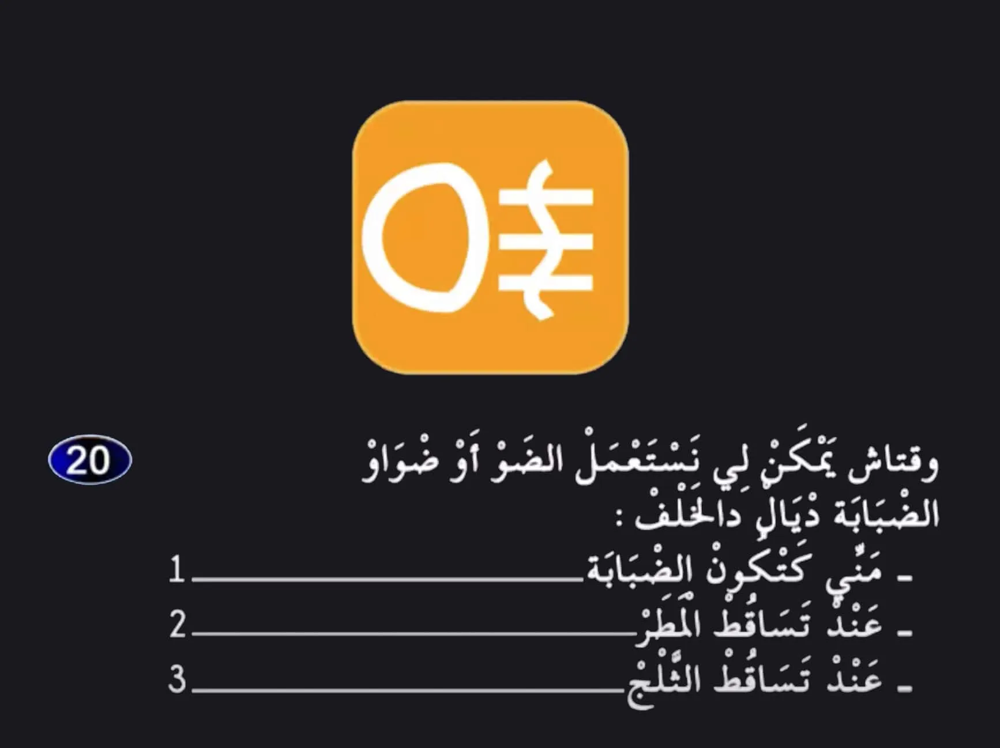
بيّن الجواب
الجواب الصحيح: 1 و 3
يُمكنني استعمال أضواء الضباب الخلفية عندما يتواجد الضباب وأيضا عند تساقط الثلج (بالنسبة لتساقط المطر نستعمل أضواء التقابل مع أضواء الضباب الأمامية وليس الخلفية).
السؤال 21
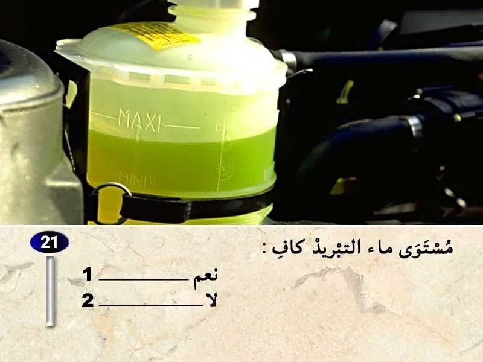
بيّن الجواب
الجواب الصحيح: 1
كما توضّح الصورة فإن مستوى ماء التّبريد يوجد بين الحد الأقصى (MAXI) والحمد الأدنى (MINI) وهذا يعني على أن مستوى ماء التّبريد كاف. (يكون مستوى التّبريد غير كاف عندما يوجد تحت الحد الأدنى MINI).
السؤال 22
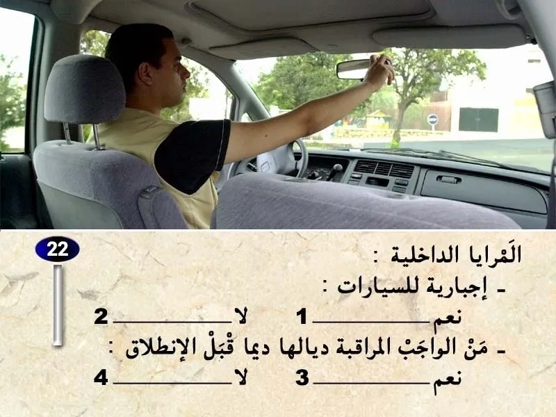
بيّن الجواب
الجواب الصحيح: 1 و 3
المرايا داخل السّيارة فهي ضرورية وإجبارية داخل السيّارة لأنها تسمح للسائق برؤية ومتابعة حركة السيارات والمارة خلف السيارة وتعمل على توضيح الرؤية للسائق للمنطقة التي تقع خلف السيارة. ويجب عليّ ضبط المرآة الداخلية للسيّارة وفقا لموقع جلوسي على مقعد القيادة أو الوضع الذي أضبط عليه وضع القيادة لكي تكون مضبوطة لرؤية خلفية جيّدة.
السؤال 23
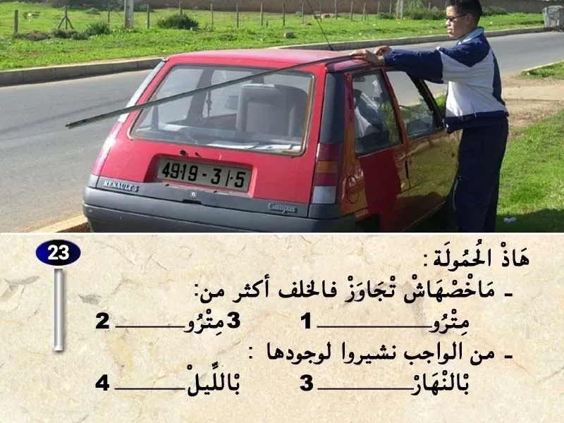
بيّن الجواب
الجواب الصحيح: 2 و 3 و 4
حمولة السيّارة لا يجب أن تتجاوز من خلف السّيارة 3 متر، وهذه الحمولة عندما يتعدى طولها من الخلف متر ففي هذه الحالة يجب علينا أن نشير لوجودها في النّهار وأيضا في اللّيل لكي ينتبه إليها السائقون أثناء السّير.
السؤال 24
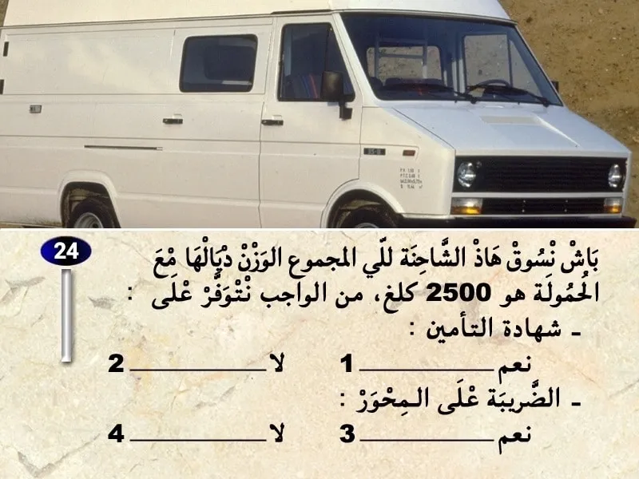
بيّن الجواب
الجواب الصحيح: 1 و 4
بما أن رخصة السيّاقة من نوع باء (B) تسمح لي بقيادة عربة لا يتجاوز وزنها مع الحمولة 3500 كلغ إذن يُمْكنني من سياقة هذه الشاحنة وأن أتوفَّر على شهادة التأمين لأنها وثيقة ضرورية لكي أستطيع قيادة أي عربة (بجانب رخصة السّياقة، البطاقة الرّمادية، الضريبة السّنوية والفحص التقني) بالنسبة للضريبة على المحور فيجب أن أتوفّر عليها عندما يكون وزن الشاحنة مع الحمولة أكثر من 3000 كلغ، وبما أن في هذه الحالة هذه الشاحنة مجموع وزنها مع الحمولة فهي 2500 كلغ إذن لا يجب أن أتوفّر على ضريبة المحور. (إذا كانت العربة أقل من 3000 كلغ وأكثر من 1999 كلغ. في هذه الحالة يجب أن أتوفّر على ضريبة الحمولة).
السؤال 25
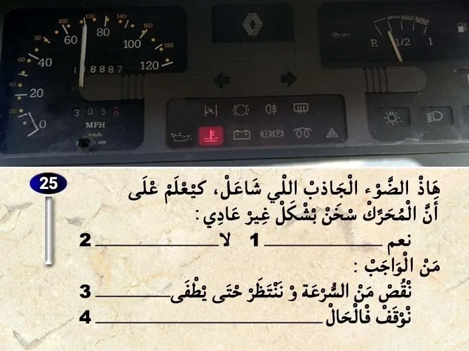
بيّن الجواب
الجواب الصحيح: 1 و 4
الضوء الجاذب الأحمر الظَّاهر في الصورة فهو يشير إلى أن محرك السيّارة درجة حرارته مرتفعة جدا، أي أن حرارة المحّرك غير عادية. بالنسبة للأضواء الجاذبة الحمراء فعِند اشتعالها فيجب عليّ الوقوف في الحين ولا يُمكِنُني الإنقاص من السرعة وإكمال السّير وأنتظر أن ينطفئ الضوء الجاذب الأحمر. الجواب الصّحيح 1 و 4.
السؤال 26
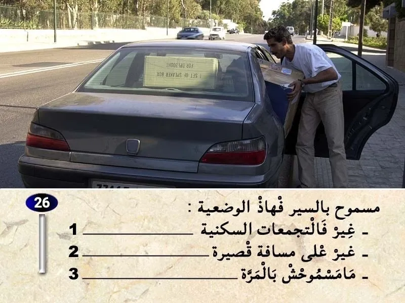
بيّن الجواب
الجواب الصحيح: 3
ليس مسموح أبدا بالسّير بهذه الوضعية بتاتا، لأن الحمولة تحجب الرؤية عن السائق من الخلف عند قيادة السّيارة وهذا يشكّل خطر, والخطر موجود في المسافات القصيرة أو الطويلة وفي التجمّعات السكنية وخارج التجمّعات السّكنية، لذلك غير مسموح بتاتا بالقيادة والحمولة تحجب الرؤية من الخلف.
السؤال 27
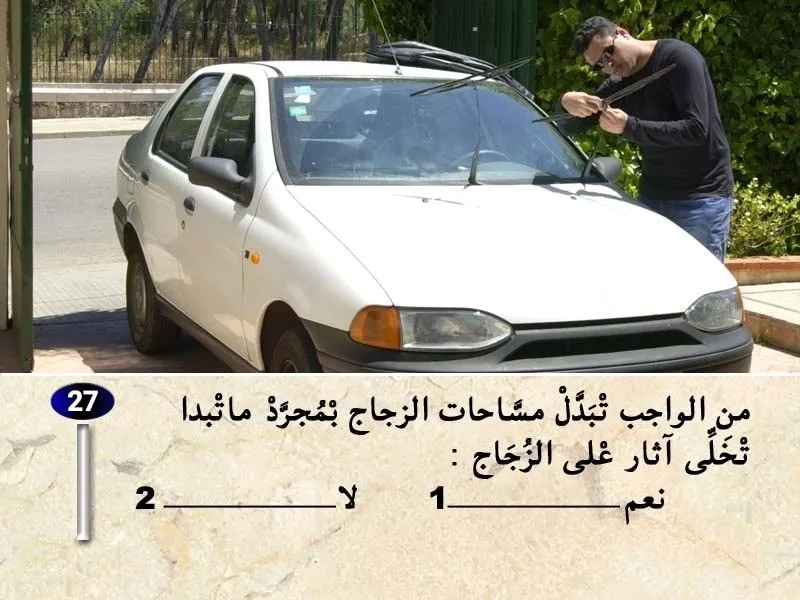
بيّن الجواب
الجواب الصحيح: 1
عندما تبدأ مسّاحات الزجاج بِتَرك آثار على الزجاج فهذا يدل على أنها لم تبقى صالحة للاستعمال ويجب عليّ تغييرها.
السؤال 28
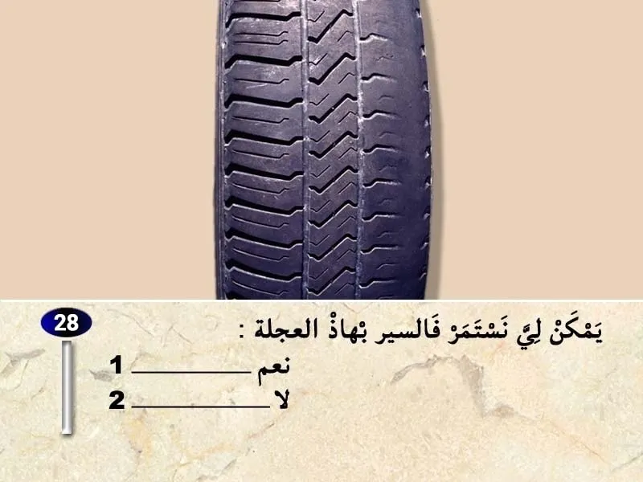
بيّن الجواب
الجواب الصحيح: 2
كما نلاحظ قي الصّورة على اليمين فإن عمق النّقوش في العجلة صغير جدا (عكس الجهة اليسرى من العجلة فإن النّقوش واضحة وجيّدة) لهذا بما أنه النّقوش على العجلة لم تَعُد ظاهرة إذن العجلة أصبحت غير صالحة للاستعمال، إذن لا يُمكنني الاستمرار في استعمال هذه العجلة ويجب عليّ تغييرها.
السؤال 29
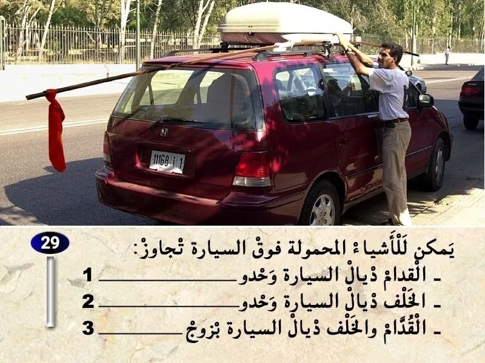
بيّن الجواب
الجواب الصحيح: 2
الحمولة أو الأشياء التي تكون فوق السّيارة فيمكن أن تتجاوز خلف السيّارة فقط وفي حدود 3 أمتار كحد أقصى.
السؤال 30
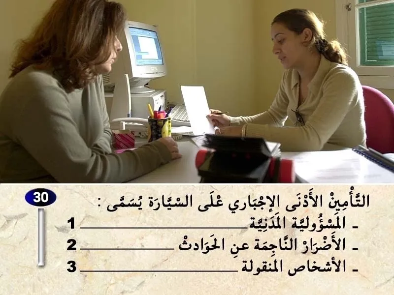
بيّن الجواب
الجواب الصحيح: 1
التأمين الدنيوي الإجباري على السيّارة فهو يسمى كذلك المسؤولية المدنية.
السؤال 31
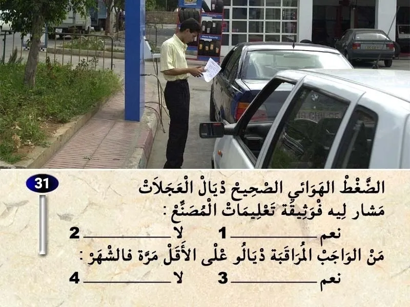
بيّن الجواب
الجواب الصحيح: 1 و 3
الضّغط الهوائي الصحيح للعجلات فيُشار إليه في وثيقة تعليمات المُصنّع (أو في ملصق على باب السيّارة)، بالنسبة لمراقبة الضّغط الهوائي للعجلات فيجب عليّ مراقبته على الأقل مرّة في الشهر لأنه يمكن أن ينخفض، لذلك يجب مراقبته.
السؤال 32
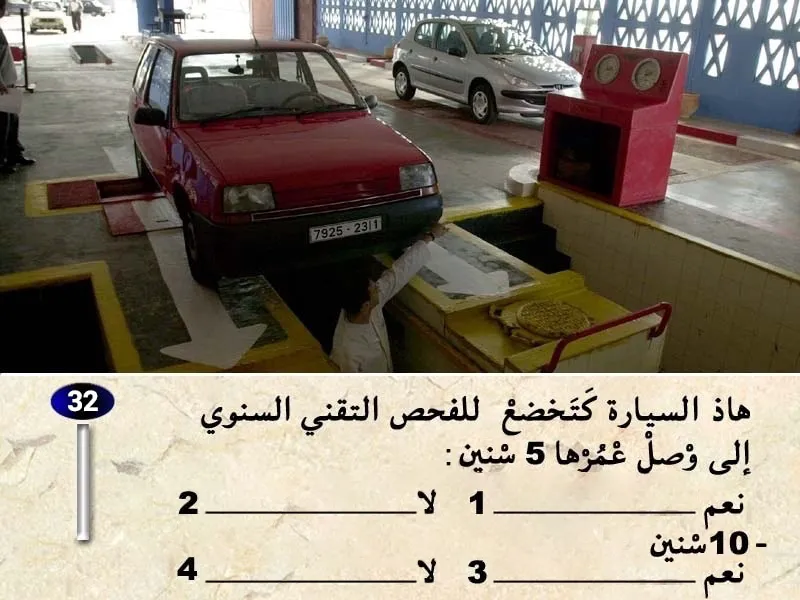
بيّن الجواب
الجواب الصحيح: 1 و 2
السّيارة سوف تَخْضع للفحص التّقني بعد كلِّ عام إبتداءً من 5 سنوات، يعني أنه عندما سوف يَصِل عُمُرُ السيّارة إلى 5 سنوات سوف تخضع للفحص التّقني وبعد عام عندما يُصبِح عُمْرُها 6 سنوات سوف تَخْضع للفحص التّقني، وبعد عام عندما يُصبِح عُمْرُها 7 سنوات سوف تَخْضع للفحص التّقني، وبعد عام عندما يُصبِح عُمْرُها 8 سنوات سوف تَخْضع للفحص التّقني، وبعد عام عندما يُصبِح عُمْرُها 9 سنوات سوف تَخْضع للفحص التّقني، وبعد عام عندما يُصبِح عُمْرُها 10 سنوات سوف تَخْضع للفحص التّقني، وهكذا .. إذن الإجابة الصحيحة هي 1 و 3.
السؤال 33
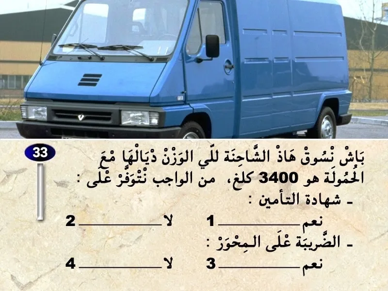
بيّن الجواب
الجواب الصحيح: 1 و 3
بما أن رخصة السيّاقة من نوع باء (B) تسمح لي بقيادة عربة لا يتجاوز وزنها مع الحمولة 3500 كلغ إذن يُمْكنني من سياقة هذه الشاحنة وأن أتوفَّر على شهادة التأمين لأنها وثيقة ضرورية لكي أستطيع قيادة أي عربة (بجانب رخصة السّياقة، البطاقة الرّمادية، الضريبة السّنوية والفحص التقني) بالنسبة للضريبة على المحور فيجب أن أتوفّر عليها عندما يكون وزن الشاحنة مع الحمولة أكثر من 3000 كلغ، وبما أن في هذه الحالة هذه الشاحنة مجموع وزنها مع الحمولة فهي 3400 كلغ إذن يجب أن أتوفّر على ضريبة المحور.
السؤال 34
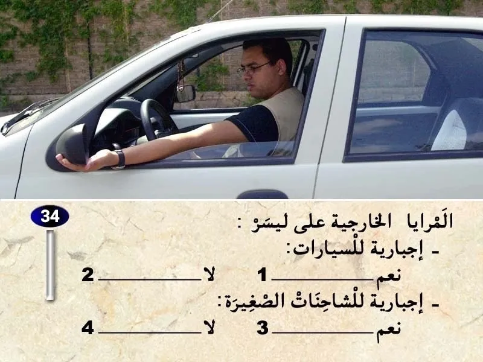
بيّن الجواب
الجواب الصحيح: 1 و 3
المرايا في السيارة، سواء كانت المرايا الأمامية أو الجانبية في السيارة، هي عين السائق على الطريق، ولكل مرايا وظيفة معينة، ويعد إهمال ضبط المرايا الأمامية والجانبية للسيارة واحدا من مسببات الحوادث لذلك فهي ضرورية وواجبة على جميع العربات الصغيرة والكبيرة.
السؤال 35
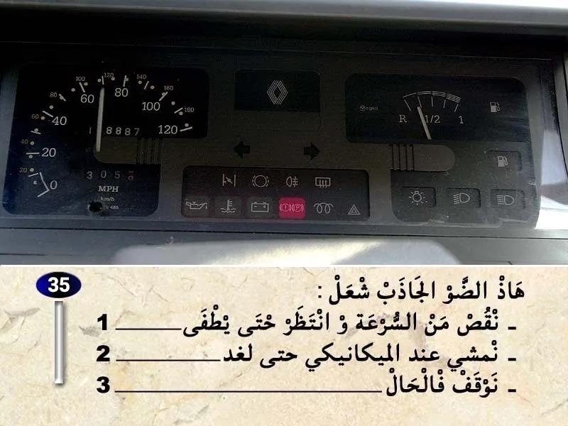
بيّن الجواب
الجواب الصحيح: 3
الضوء الجاذب الأحمر في الصورة فهو يُشير إلى شيئين: يا إما ان الكابح اليدوي (frein à main) مرفوع ويجب عليّ إنزاله. أو هنالك نقصان في زيت الفرامل. لو كان الكابح اليدوي مرفوع فيجب عليّ إنزاله وإذا إنطفأ الضوء الجاذب فهذا جيّد، لكن لو لم ينطفأ فهذا يعني على أن المشكلة في نقصان زيت الفرامل وفي هذه الحالة فيجب عليّ التوقّف في الحال، لأنه بصفة عامّة فإن إشتعال الأضواء الجاذبة الحمراء فهو يشير إلى خطر وفي هذه الحالة عليّ دائما التوقّف عند إشتعالها والتحقق من المشكلة وإصلاحها إذا لزم الأمر. الإجابة الصحيحة هي 3.
السؤال 36
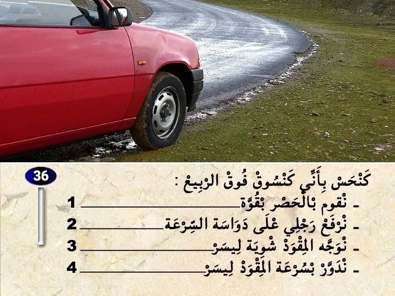
بيّن الجواب
الجواب الصحيح: 2 و 3
عندما تكون السيّارة فوق العشب فيجب عليّ في هذه الحالة أن أرفع رجلي على دواسة السّرعة لأن القيادة فوق العشب وأنا ضاغط على دواسة السّرعة سوف يؤدي إلى إنزلاق السيّارة وهذا يشكّل خطر، ويجب عليّ كذلك توجيه مِقْوَدْ السّيارة لليسار ببطئ لكي أستطيع التحكّم في السيارة وتوجيهها إلى الطّريق المعبّدة. (لا يمكن أن أقوم بالحصر بقوة لأن السيّارة سوف تنزلق فوق العشب ولن أستطيع التحكّم بها، وأيضا لا أقوم بتوجيه مِقْوَدْ السيّارة بسرعة لليسار فهذا أيضا سوف يسبب في إنزلاق السيّارة ولن أستطيع التحكّم بها).
السؤال 37
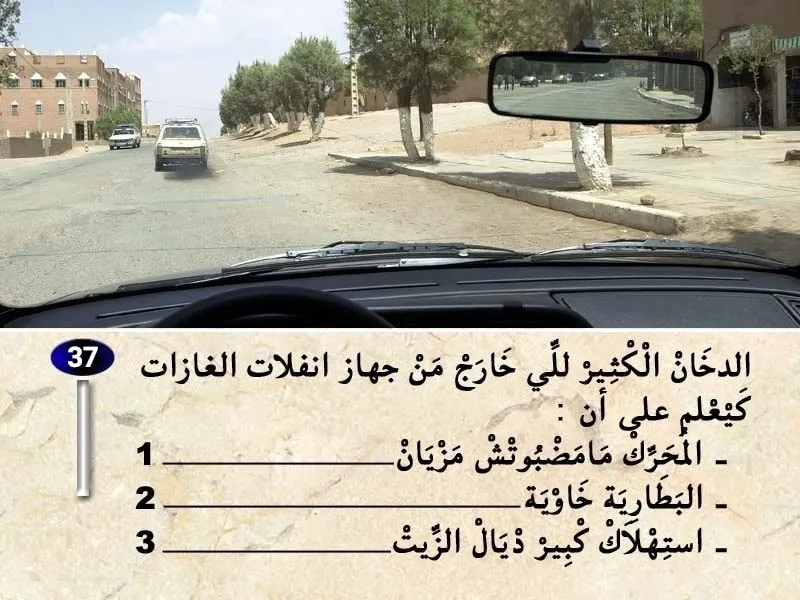
بيّن الجواب
الجواب الصحيح: 1 و 3
الدُخّان الكثير الذي يخْرج من جهاز انفلات الغازات (chagma) فهو يُشير إلى السائق لا يستعمل بشكل جيّد مستوى السرعة للمحرك (vitesse) (يعني مثلا يجب عليه أن يستعمل المستوى الثالث من السرعة وهو يستعمل فقط المستوى الأول أو الثاني ويبدأ في الضغط بقوة على دواسة السرعة) وهذا سوف يُسبب في خروج الدخان من جهاز انفلات الغازات (chagma). أيظا يوجد سبب اخر وهو يمكن أن يكون هنالك إفراط في إستهلاك الزيت الخاص بالسيّارة يعني أن السيّارة تستهلك الزيت بصورة مفرطة وكثيرة. لا يوجد علاقة بين البطارية فارغة والدخان الذي يخرج من جهاز انفلات الغازات (chagma). إذن الإجابة الصّحيحة 1 و 3.
السؤال 38
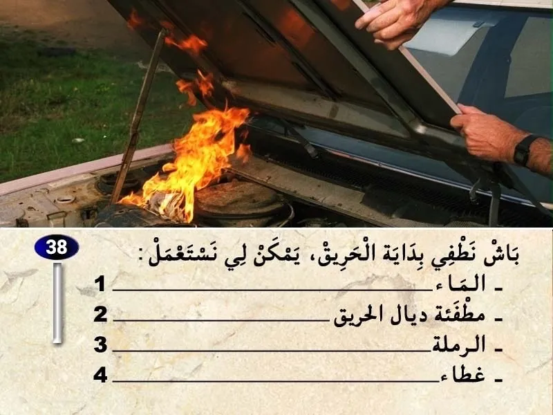
بيّن الجواب
الجواب الصحيح: 2 و 3 و 4
أثناء اندلاع حريق في عربة أول شيئ أقوم به هو تشغيل الأضواء التحذيرية وإطفاء المحرك. بعد ذلك يمكن لي أن أستعمل مطفئة الحريق، الرمل لأنه فعال في إطفاء الحريق و ذلك بِرشِّه بغزارة على مكان الحريق وكذلك غطاء يمكن أن يكون فعّال لإخماد الحريق. (فقط الماء فهو ممنوع استعماله أثناء اندلاع حريق في السيّارة بسبب خطر التَّكهْرُب مع الأسلاك والتيار الكهربائي الموجود).
السؤال 39
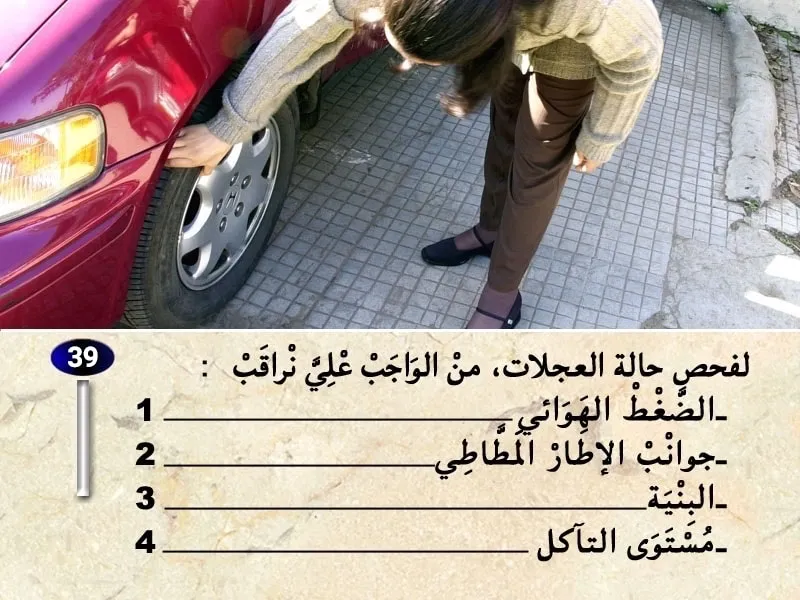
بيّن الجواب
الجواب الصحيح: 1 و 2 و 4
لكي أقوم بفحص العجلات فمن الواجب عليّ أن أفحص الضغط الهوائي للعجلات (هل منخفض أم مرتفع، لو كان منخفض فأقوم بزيادته ولو كان مرتفع فأقوم بِخَفضِه). أقوم كذلك بفحص جوانب الإطار المطاطي يعني أقوم بفحص جوانب العجلة هل هي مُمًزَّقة أو عالق بها شيئ ما أو .. إلخ. وهذه العملية أقوم بها فقط بالعَينين، يعني فقط ألاحظ هل هنالك شيئ ما في العجلة أم أن كل شيئ جيّد. وأقوم كذلك بفحص مستوى التآكل يعني أقوم بفحص المستوى الدّنيوي للنّقوش والذي هو 1,6 مليمتر وهل العجلة مازالت جيّدة للاستعمال. (بِنْية العجلة فهي لا تتغير لذلك لا أقوم بفحصها، يعني لو كانت بِنية العجلة أي مقاسها هو 19، فسوف يبقى كما هو 19 ولا يتغيّر، لذلك لا أقوم بفحص هذا الجانب).
السؤال 40
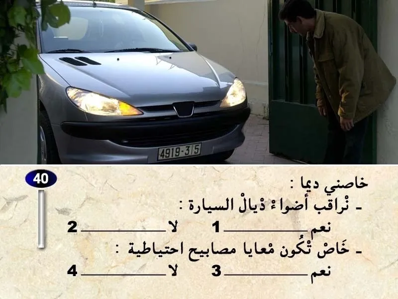
بيّن الجواب
الجواب الصحيح: 1 و 3
يجب عليّ دائما أن أقوم بمراقبة أضواء السيّارة وهل هي تشتغل بشكل جيّد أم لا، لأن أضواء السيّارة فهي من الأمور المهمة والضرورية التي يجب أن تبقى دائما تشتغل بصورة جيّدة في السيّارة لذلك يجب عليّ مراقبتها بشكل دائما، كما أنه يجب عليّ أن أَمْتَلِك مصابيح احتياطية في حالة أنه لو تَعطّل مصباح ما فيكون بِحوْزتي أضواء احتياطية لكي أقوم بتغييرها.